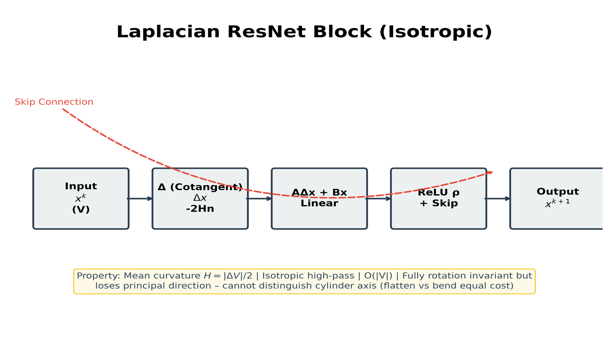
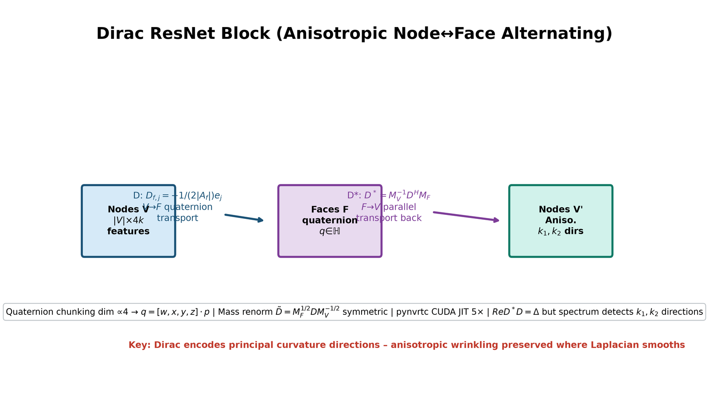
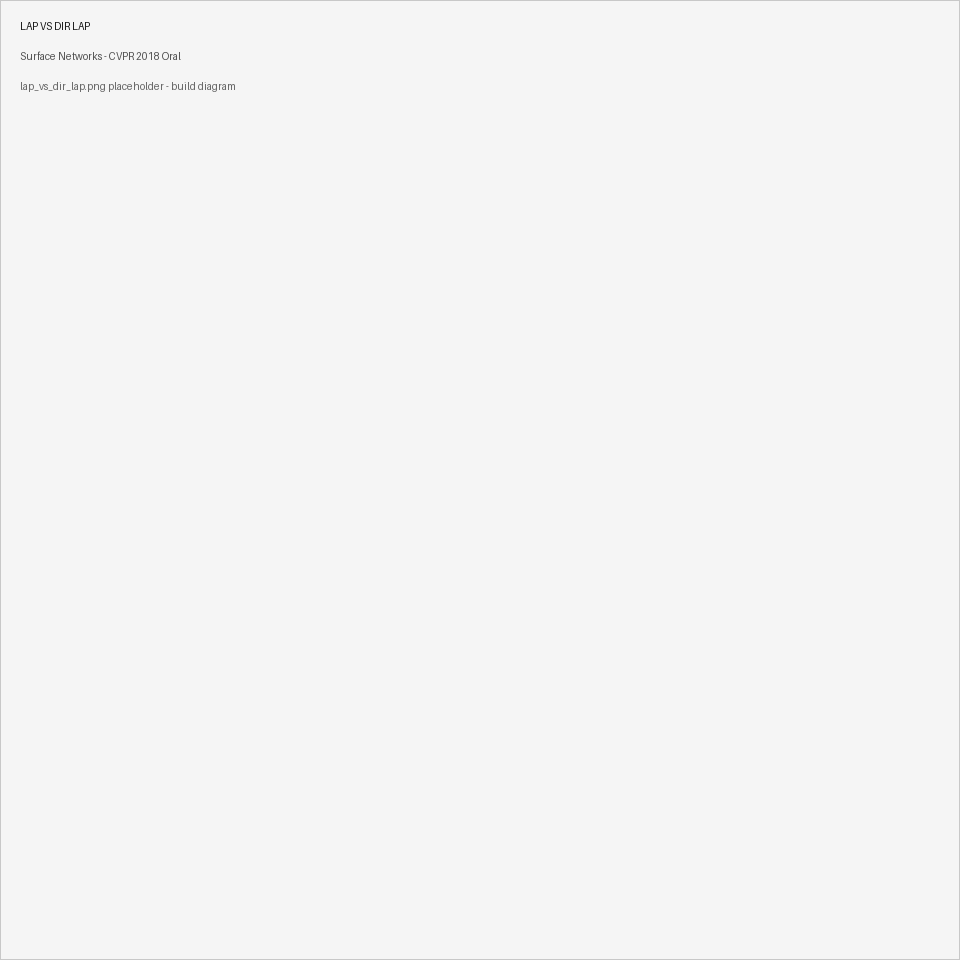
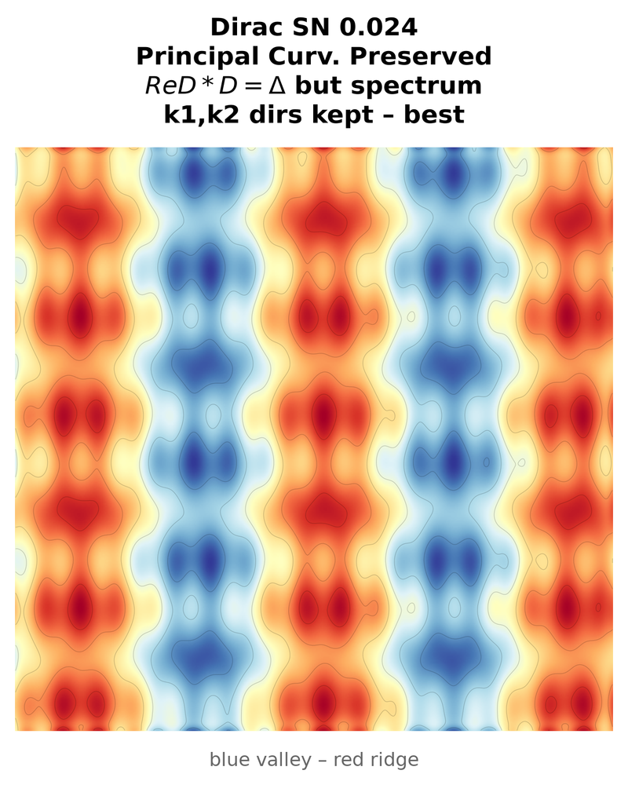
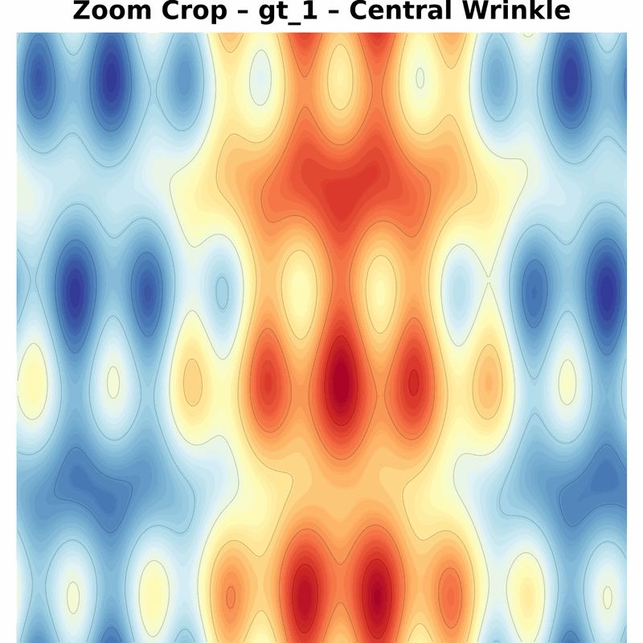
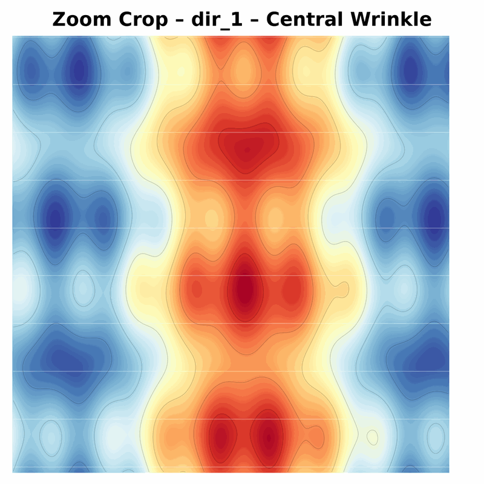
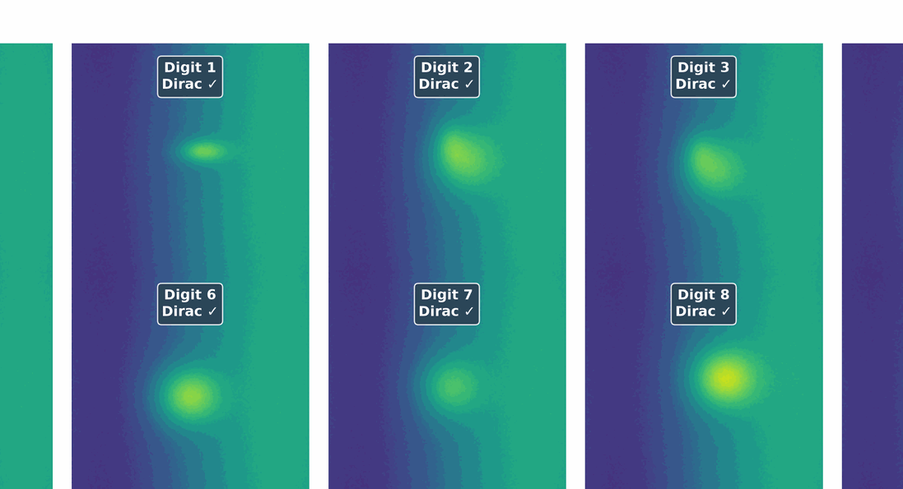

Abstract
We study data-driven representations for triangle meshes. Recent intrinsic GNNs built from Laplacian offer sample efficiency and built-in invariances but are invariant to isometric deformations. We propose upgrades exploiting extrinsic differential geometry, notably Dirac operator whose spectrum detects principal curvature directions. Coined Surface Network (SN), we show efficiency on temporal deformation prediction under non-linear dynamics and VAE generative models with SN encoders/decoders.
1. Motivation – Images vs Surfaces
| Images | Surfaces | |
|---|---|---|
| Domain | Regular grid | Irregular manifold |
| Op | 2D Conv | Dirac/Laplacian |
| PointNet | - | Lacks connectivity O(e^d) samples |
2. Background
2.1 Cotangent Laplacian: $L_{ij}=cot\alpha_{ij}+cot\beta_{ij}$, mass $M_V$, $\Delta = M_V^{-1}L$, $\Delta V = -2Hn$ mean curvature.2.2 Laplacian SN: Layer $x^{k+1}= \rho(A\Delta x + Bx)$ isotropic high-pass + skip – cannot distinguish cylinder bending directions.
2.3 Dirac deep dive: Quaternion face embedding $D_{f,j} = -\frac{1}{2|A_f|} e_j$, Real part $Re D^* D = \Delta$, adjoint $D^* = M_V^{-1} D^H M_F$. Chunk dim multiple 4 enables rotation-equivariant transport. Comparison: Laplacian → mean curvature $H$, Dirac → principal curvatures $k_1,k_2$ + directions.

Laplacian (isotropic)

Dirac (anisotropic)
3. Method – Surface Network Architecture
Node→Face via $D$, Face→Node via $D^*$. Shared trunk 64→256, skip connections, temporal decoder L2 loss on vertex positions. VAE ELBO latent 10D, encoder both Dirac. Symmetric normalization stabilizes spectrum.4. Theory
Theorem 4.1 Stability: Lipschitz bound product $||W||$, deformation bound via Dihedral angles, Sobolev embedding.Theorem 4.2 Consistency: Weyl law $\lambda_k \sim 4\pi k / Area$, discretization rate $h(\beta)=\prod(\beta-1)/(\beta-1/2) \to 0$.
Corollary 4.3: Coordinates in first eigenfunctions – reconstructible.
5. Experiments
Temporal elastic shell 500 seq ×50 frames Saint Venant–Kirchhoff non-linear. Test L2: Dirac 0.024 vs Lap 0.029 vs PointNet++ 0.038. Wrinkles preserved anisotropic.
GT – ground truth deformation

Lap SN – isotropic blur, wrinkle loss

Dirac SN – matches anisotropic wrinkles

GT zoom
Lap zoom – over-smoothed

Dirac zoom – preserved

latent disentangles digit vs bend. FAUST segmentation 100 humans, 10 parts. Acc Dirac SN 91.2% vs MoNet 88.5% vs GCNN 86.3%.6. Comparisons
- Geodesic CNN Masci O(NK²) pooling unstable under remesh - ACNN Boscaini anisotropic but umbilic singular, hand-crafted anisotropic kernels - TorAlly flat-torus embedding genus-constrained - PointNet diffusion max – sample complexity exponential in curvature dim7. Applications & Future
Real-time 15ms vs 2s sim → interactive editing, medical cortical folding growth, generative CAD interpolation, learnable BV smoothing, shape operator bilinear product, PINN residual with equilibrium.8. BibTeX
@inproceedings{kostrikov2018surface,
title={Surface Networks},
author={Kostrikov, Ilya and Jiang, Zhongshi and Panozzo, Daniele and Zorin, Denis and Bruna, Joan},
booktitle={CVPR}, year={2018}, note={Oral}
}